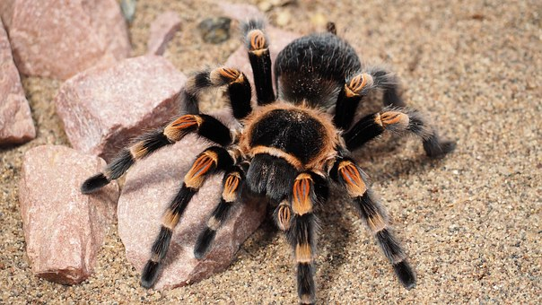
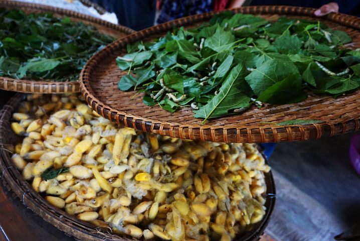
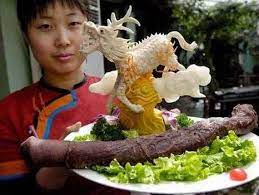

1. Fried tarantulas, Cambodia
This creepy big fried tarantula is sold in Cambodian street venders. If you suffer from arachnophobia you might consider not eating it! These spiders aren't the usual small house spiders, No they are big eight-legged tarantulas. They were first discovered to be edible by starving Cambodians in the bloody, brutal days of the Khmer Rouge rule. The tarantulas taste like chicken or kinda like fried maggots for many others. It has a gooey inside and a crispy outside. It only cost a few cents, they taste delicious plucked straight from the burrow and pan fried with a bit of garlic, salt and lime.
2. Fertilized Eggs, Philippines
Have you ever heard of Balut, well that's good. But that doesn't mean you wont read about it now. A Balut is still a fertilized egg in its egg. The egg could be a duck, or a chicken. They are cooked when the foetus is anywhere from 17 days to 21 days depending on your preference, although when the egg is older the foetus begins to have a beak, claws, bones, and feathers. The egg is full of protein, but let's be honest. If you come from the western side of the world, you would think it’s kinda disgusting.
3. Maggot Cheese, Sardinia
You may have heard of the beautiful country called Italy. You know, the country with fresh wines, delicious food and… Maggot Cheese! Yes, it is a cheese roll filled with delicious cheechy cream. But the cream isn’t made of the cheese itself, it is made from the maggots. The creamy cheese occurs as the larvae digest the cheese fats, and the texture becomes very soft with some liquid seeping out. The cheese is made from goat milk, and soaked in a couple of months. Today this kind of cheese is banned in many places in Italy, but it is still made by small farmers across the country. But they are not allowed to sell the cheese, they just make it to enjoy the flavour of the it.
4. Dried baby crabs
At Epcot’s Japan Pavilion, you can find these at the back of the Mitsukoshi Department Store with other popular Japanese snacks like Pocky and dried squid. Yes, dried crabs,and squid. It is a Japanese delicacy, and is often seasoned with salt and pepper.
5. Silkworms, China
Various insects are considered a delicacy in many cultures. In China, silkworms are one of those insects, and they are enjoyed by the locals. Silkworms can be found in local markets cooked several ways or stocked frozen and canned. It can even be found in local 7/11 stores around China. It’s normally served up with rice or noodles, or the pupae can be deep-fried and served with your choice of dipping sauce
6. Sauerkraut, Norway
You may haven't heard of the amazing sauerkraut, it is a Norwegian dish and tastes amazing. Many people around the world are kinda sceptical about the dish, because it mainly contains the lamb's rest of its body. Except it’s head and throat. I am from Norway myself, and love sauerkraut. It has a little acidity, it's salted and served with cabbage and potatoes. The reason Norway eats sauerkraut is mainly because they was influenced by the danish to eat sauerkraut, but the danish sauerkraut contained duck meat. The Norwegian at that time didn’t have a lot of duck, so they replaced the duck meat with mutton. Wich they already had.
7. Pi Dan, Phillipines
Pi Dan can be preserved for up to five months, if the eggshell remains unbroken. During the process of making these eggs, a chemical reaction turns the egg from white to transparent, and a snowflake pattern may be visible on the outside. They can be served in cold dishes such as salads or can be paired with soy sauce and green chilis for a spicy lunch. Century Eggs (Pi Dan) are also a popular gift for friends and family during the traditional Chinese Dragon Boat Festival.
8. Bird Spit Soup, China
One of the more bizarre foods the Chinese eat is bird’s nest soup. This famous soup is made from a swiftlet’s actual nest. This small bird is found in Southeast Asia and lives in dark caves like a bat. Their nests are made from their own gummy saliva produced by the glands under their tongue. The nest of saliva hardens as it is exposed to the air. It is boiled in steamed water, so it gives the saliva more gummy, or jelly-like texture.

9. Sushi Donut
Who doesn't like sushi, and who doesn't like doughnuts. Well why not combine these tasty treats. Well in Disney World you can find this bizarre “Sushi Donut”, it is a sushi, but just combined together to look like a doughnut.

10. Sheep Penis, China
For the final list of weird food items, it is very unusual to see this dish everyday. It is a sheep penis, and originated from china. Sheep penis, along with other animal penises and testicles, served as a remedy for that problem. A restaurant in China, Guolizhuang, is dedicated to serving all types of dishes with animal genitalia, such as sheep gonads on a bed of curry and steamed sheep penis. People come to the restaurant to eat the food, because they believe it will help sexual health. The Chinese have many wacky things in their country, but I think “Sheep penis” tops it all.
